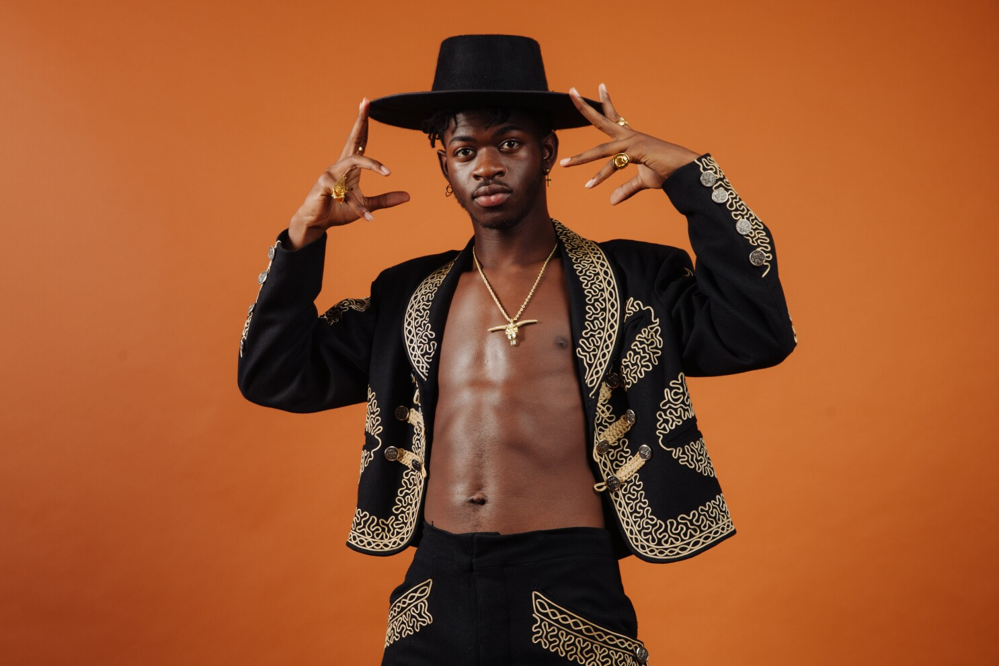
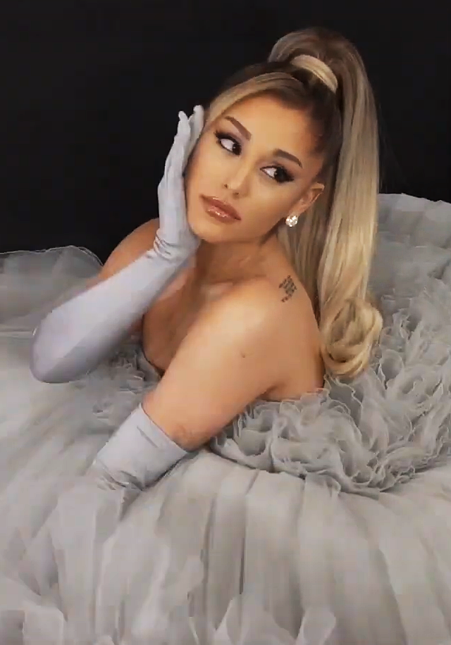
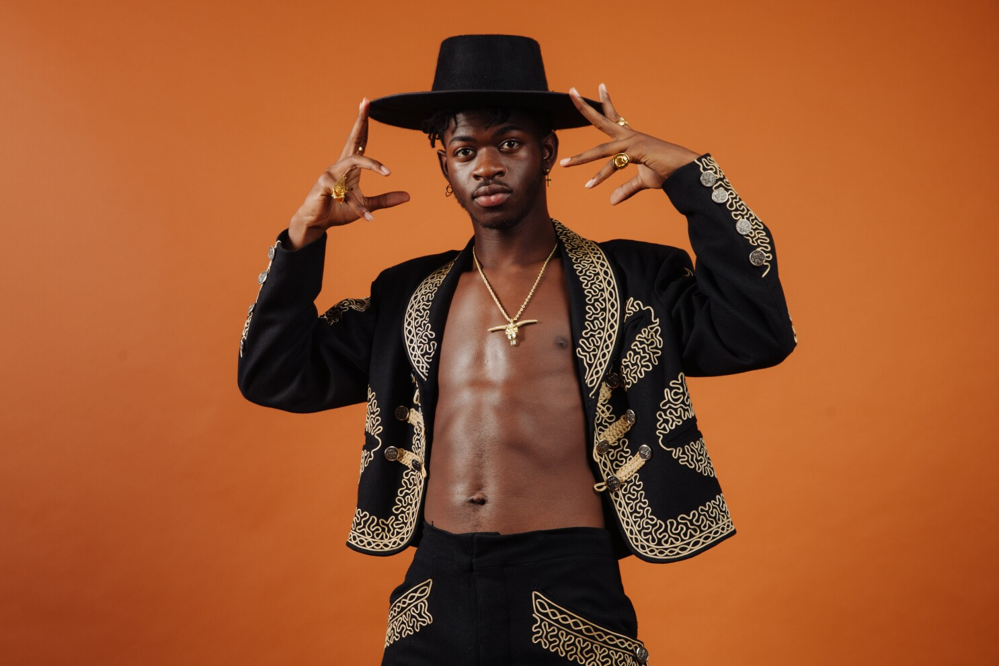
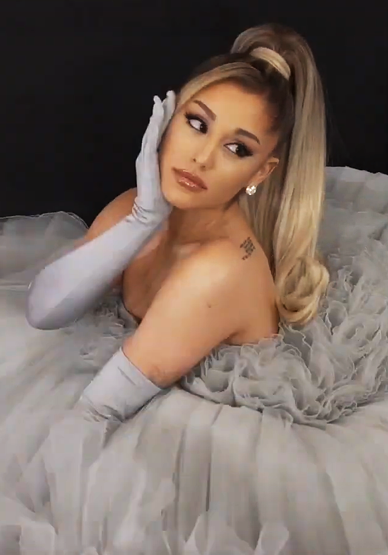

Rihanna had definitely trailblazed a path for black women in the music industry. Shifting effortlessly through genres and personas she highlights the multi-dimensional elements of black women, shifting the conversation away from the stereotypical biases placed on women.


Beyonce, similar to her musical peers Rihanna and Nicki Minaj has shown society the importance of a strong leading woman. One who is multidimensional and more than her music career. Beyonce has extended her career into cinema, and fashion.


 


